AI Website Generator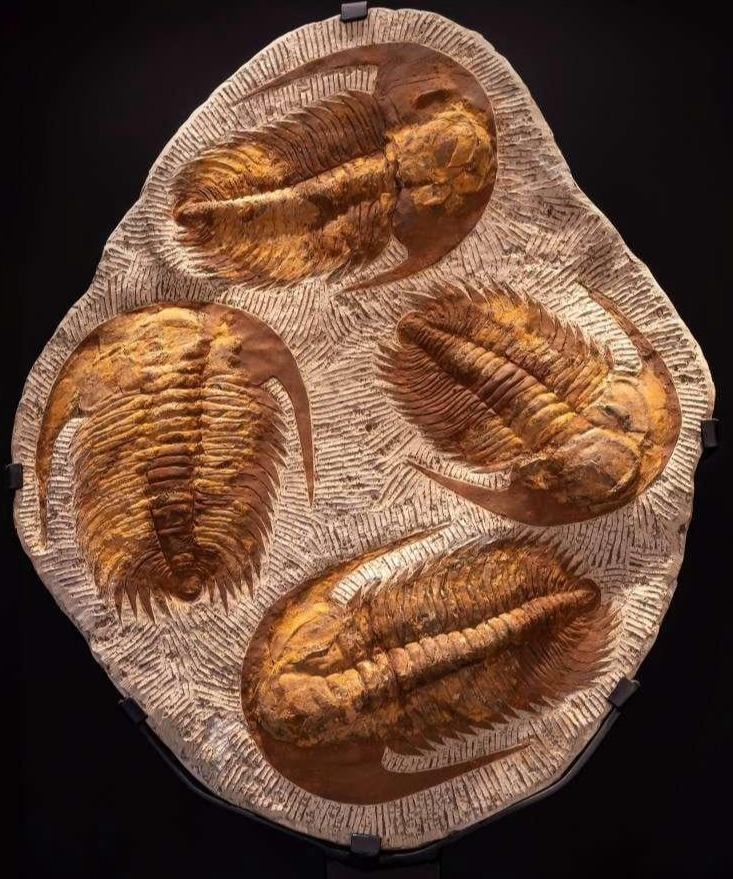
Forstening af trilobiter. Trilobitter havde sammensatte øjne, som du kender det fra fx fluer. Nogle fossiler er så detaljerede, at man de enkelte facetter i trilobitens sammensatte øjne
Det er nemmest at hitte rundt i de forskellige klasser af hvirveldyr, hvis du får historien om, hvordan de er opstået. Og det ved vi ret meget om fra fossiler. Fossiler er bevarede spor efter liv, der har levet for længe siden. Et eksempel er forsteninger, som kan opstår når et dødt dyr eller plante bliver begravet under iltfrie forhold. Det oprindelige materiale dyret bestod af, vil så langsomt blive nedbrudt og erstattet af mineraler. Og på denne måde opstår der en forstening, som med mikroskopisk nøjagtighed kan fortælle os, om liv der levede for millioner af år siden. Lang tid før krybdyr og pattedyr overhovedet eksisterede, -og det er da ret vildt:)
Inden hvirveldyrene kom til, var alle dyr bygget op af blødt væv. Det er det vi kalder for hvirvelløse dyr. Nogle havde dog skelet uden på kroppen. Det hjalp dem med at holde deres form og beskytte dem mod omverdenen. Men så for ca. 525 mio. år siden opstår de første hvirveldyr, med en form for rygsøjle, og de ændre markant på hvordan liv kan se ud. Mange af deres tilpasninger til miljøet bliver store succeser, og er grundlaget for de 7 klasser af hvirveldyr vi kender i dag. Og lige for overblikkes skyld, så er 500 mio. år altså så langt tilbage, at der stadig ikke levede dyr og planter på land. Faktisk er det først ved at blive normalt, at dyr har øjne og at der findes større rovdyr. Derfor er de fleste dyr på dette tidspunkt ret små.
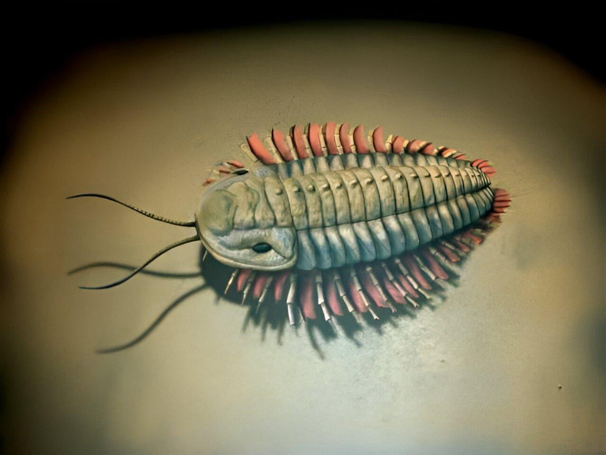
Trilobiter var nogle af de første komplekse dyr i havene. De havde hårdt ydre skelet og mange segmenter. De fleste var mellem 2-10cm, men nogle arter kunne blive op til 70cm.
Levetid
Levede ca. 550–221 millioner år siden
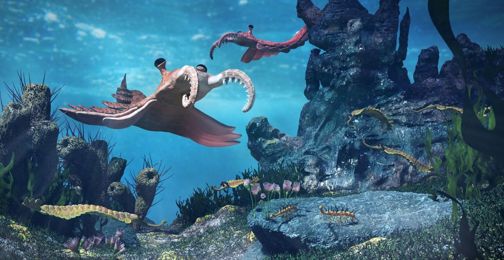
Den næsten alien-agtige Anomalocaris var et af de første store rovdyr. Med sin op til 1 meters længde, var den en kæmpe i forhold til de fleste andre dyr. Den havde avanceret syn, lange fangearme og en rund tandmund, -kort sagt en komplet jagtpakke. Den er i høj grad med til at sætte våbenkapløbet mellem rovdyr og byttedyr igang.
Levetid
Levede ca. 520–500 millioner år siden
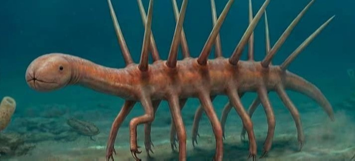
Hallucigenia var et kun 1–5 cm langt ormelignende dyr. Den havde en blød krop, men på sine pigge havde den en tynd hård ydrehud, så den sandsynligvis primært brugte som forsvar mod primitive rovdyr.
Levetid
Levede ca. 508–505 millioner år siden
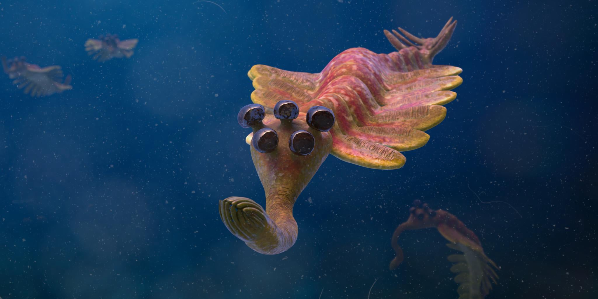
Opabinia var mest sandsynligt rovdyr eller ådselæder og brugte sin snabel til at fange smådyr på havbunden. Den havde blød krop og 5 øjne på stilke. Ca. 5–10 cm
Levetid
Levede ca. 508 millioner år siden
På illustrationen kan du se, hvordan hvirveldyrene gennem tiden har udviklet sig, til de 7 hvirveldyrsklasser vi har i dag. Fælles for dem alle er at de har rygsøjle, kranium og indre skelet. Længere nede kan du læse om, hvad der kendetegner de forskellige klasser, og hvorfor deres tilpasninger har betydet overlevelse.
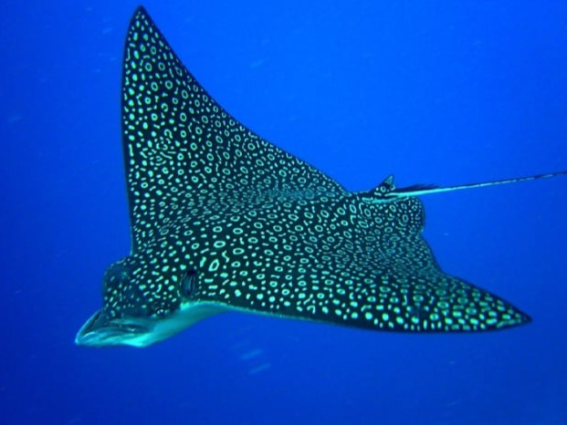
Bruskfisk
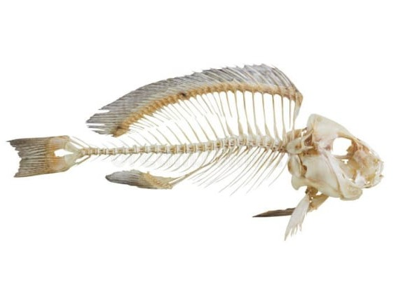
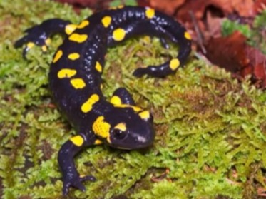
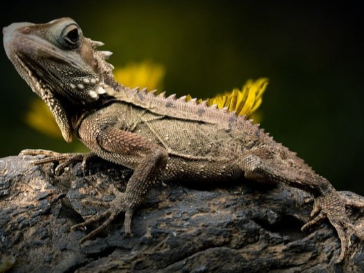
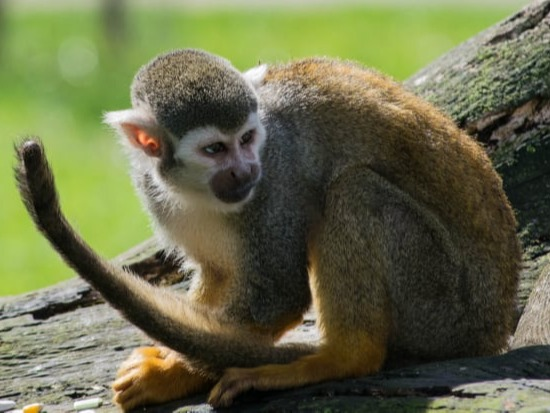
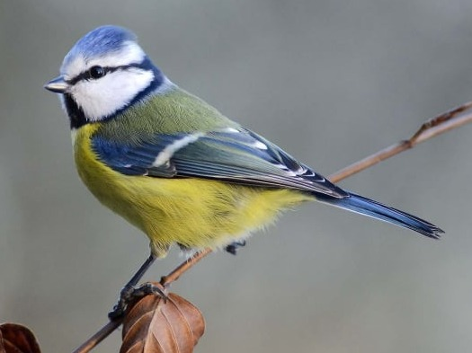
AI Website Generator